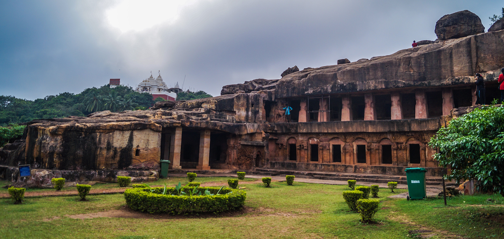

-
Shri Jagannath Temple, Puri
This temple is suituated in Puri district of Odisha, near the sea beach.It was created by Chodaganga Deva in ancient times.Lord Jagannath is worshipped here by the devotees all over the world.This temple has so many mysteries.

-
Nandankanan Zoological Park, Bhuabneshwar
It is a Zoo, situated near Patia, Bhubaneshwar.There are many wild animals also present in it.There is a small lake inside Nandankanan Zoo named as Kanjia Lake.There is also a tram inside the zoo for entertainment.
-
Dhamara Port, Bhadrak
It is a port having vast infastructure that handles multitype cargo.India supplies products and gets products from different countries throught water way by this port.
-
Dhauligiri, Bhuabneshwar
It is located about 8 km from Bhubaneshwar.It is best known as the site of the peace pagoda or Dhauli Shanti Stupa.The dome - shaped Shanti Stupa has stone panels displaying Lord Buddha 's footprints and the BodhI tree.
-
Hirakud Dam, Sambalpur
It is the longest earthen dam in the world.Behind the dam extends a lake.Hirakud Reservoir is 55 km or 34 miles long.It is one of the first major multipurpose river valley projects started after India 's independence.

-
Khandagiri and Udaygiri Caves, Bhuabneshwar
This lithic records are inscribed on the walls of the Hathi Ghumpha or Elephant Caves in Udaygiri, and are a grand example of Pali records found in India.The Rani Gumpha, also in the Udaygiri caves, is worth a visit for its spacious
courtyard and sculptural friezes.

-
Konark Temple, Puri
A masterpiece of creative genius in both conception and realisation, the temple represnts a chariot of the Sun God, with twelve pairs of wheels drawn by seven horses evoking its movement across the heavens.It is embellishedwith sophisticated
and refined iconographical depictions of contemporary life and activities.